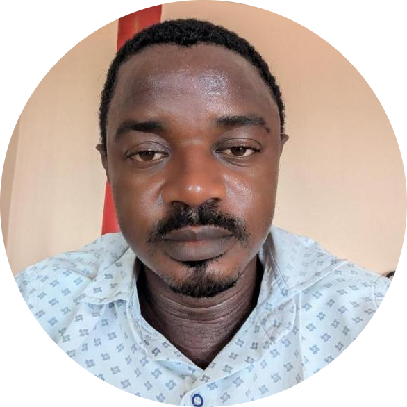

|  |
Technicien informaticien d'origine camerounaise, Monsieur TSAFACK TSADJIA Kevin Antoine de son nom complet, nait le 20 avril 1984 au village Fongo-Ndeng et y grandit avant de s'installer à Douala, où il commence à s'en donner pleinement aux techniques de réparation d'outils informatiques. Soutenu par ses parents , il obtient son attestion au centre de formation professionnel de douala (CFP-Douala) en tant que maintenancier-informaticien en 2010. De l'été 2008 jusqu'à nos jours, Monsieur TSAFACK Kevin est marié légalement à deux (02) magnifiques femmes. Actuellement dans son harem, ce dernier a 07 enfants qui sont scolarisés et bien vaillants. |
Monsieur TSAFACK Kevin inaugure officiellement son entreprise le Jeudi 10 octobre 2013 en présence de ses deux (02) épouses et sa première fille. La spécialité d'origine de cette dernière étant la maintenance des systèmes et réseaux informatiques (le MSRI), celle-ci va très vite s'élargir avec plusieurs autres spécialités qui entrent dans le domaine de l'informatique. Aujourd'hui, LADEMADOI est une petite et moyenne entreprise qui est autonome et qui prone la satisfaction de tout client.